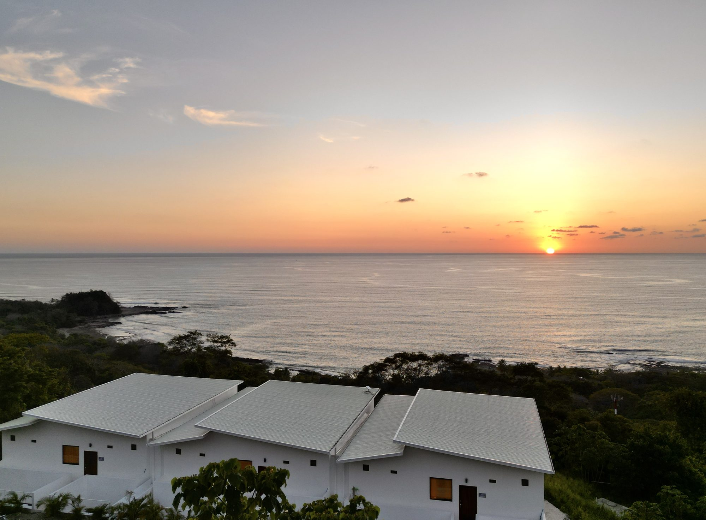

La vida nocturna de Santa Teresa se despliega en capas progresivas — comenzando con el ritual de la hora dorada en bares frente al mar, evolucionando hacia una escena gastronómica sofisticada, y culminando en ritmos electrónicos que vibran hasta el amanecer. No es la vida nocturna frenética de San José, ni el entretenimiento de los resorts de Los Cabos. Es más bien una escena nocturna que respeta el ritmo del lugar: primero el atardecer, siempre.
El Ritual de la Hora Dorada
Ninguna experiencia en Santa Teresa es más quintaesencial que ver al Pacífico consumir el sol desde un taburete de bar con una bebida fría en la mano. El ritual comienza alrededor de las 17h cuando la luz se vuelve oro líquido, y el cielo se transforma en tonos progresivamente más profundos de naranja, coral y carmesí.
Rocamar: Donde el Océano Se Encuentra con Tu Cóctel
Rocamar se mantiene solo en su categoría — literalmente suspendido entre la tierra y el mar con columpios posicionados directamente en la arena al borde del agua. Llegar aquí durante la hora dorada es entender el significado preciso de la cultura de playa mediterránea trasplantada al Pacífico. Te encontrarás en un columpio de madera, los dedos de los pies casi rozando la arena, sosteniendo un cóctel perfectamente ejecutado mientras el sol se hunde en el horizonte. Las multitudes llegan alrededor de las 17h30 y el lugar se llena de una mezcla de viajeros astutos, empresarios locales y surfistas errantes. La hora mágica dura hasta aproximadamente las 18h30, después de lo cual el lugar se transforma en un destino de cena.

Banana Beach: Elegancia Casual al Atardecer
Banana Beach ofrece una energía ligeramente más relajante. Piensa en un pabellón de playa de colores brillantes, guitarra acústica en vivo, y cócteles de atardecer servidos en el tipo de vasos que capturan hermosamente la luz que se desvanece. El ambiente aquí es más bohemio, atrayendo a viajeros que prefieren la informalidad descalzada a la sofisticación pulida. La comida es respetable, frecuentemente presentando peces frescos y ceviche, aunque las bebidas son el verdadero atractivo.
Cultura Vinícola & Cócteles
Cuando cae la oscuridad y la cena se convierte en el punto focal de la noche, la escena de bares de Santa Teresa se desplaza hacia experiencias de bebida curada en lugar de mero refresco.
Tipsy Wine Bar
Tipsy Wine Bar representa la maduración del destino. Aquí encontrarás una lista de vinos cuidadosamente seleccionada que enfatiza pequeños productores de Argentina, Chile y Nueva Zelanda — regiones que superan su peso en calidad pero permanecen subrepresentadas en menús convencionales. El sommelier es conocedor sin ser pretencioso, y el programa de cócteles, respetando tradiciones clásicas, incorpora ingredientes locales frescos. El espacio en sí es sofisticado pero accesible: madera expuesta, iluminación sutil, el tipo de estética que la revista Kinfolk llamaría "minimalismo refinado".
Bar del Hotel Nantipa
El bar del Hotel Nantipa ofrece quizás el entorno de bebida más lujoso de Santa Teresa. El escenario — pabellón al aire libre con vista al Pacífico, ventilado y voluminoso — se siente como algo de un catálogo de casas de diseño, sin embargo permanece sin pretensiones. Los cócteles aquí se preparan hábilmente. La clientela tiende hacia el extremo superior del mercado, pero la conversación permanece accesible. Aquí es donde llevarías a alguien que quisieras impresionar.
Música Electrónica & Noches Tardías
La vida nocturna de Santa Teresa realmente no comienza hasta las 22h o más tarde, un ritmo que recompensa a los que están de vacaciones y castiga a los madrugadores. La escena de música electrónica, aunque modesta en comparación con destinos internacionales más grandes, ha encontrado su equilibrio y su audiencia.
Drift Bar: El Verdadero Club Nocturno
Drift Bar (driftbarcr.com) es el lugar más serio de música electrónica de Santa Teresa. DJs internacionales rotan a través de la programación con cierta regularidad. El sistema de sonido es realmente apropiado — no los equipos externos tinineantes de bares de playa casual, sino un sistema real capaz de mover bajos y crear ambientes sónicos genuinos. La mayoría de noches presentan house o tech-house, con incursiones ocasionales en territorios electrónicos más profundos. Las noches de viernes y sábado atraen a los bailarines más dedicados de la ciudad. No hay cargo de entrada la mayoría de noches, aunque las grandes reservas pueden cobrar $15-20 USD.

La Lora Amarilla: Noches de Reggae & Trance
La Lora Amarilla opera en una frecuencia diferente. Este lugar de noche tardía se especializa en reggae, dancehall y noches de trance, con notoriedad particular por sus celebraciones de luna llena. Quienes esperan cultura de clubs deben notar: este es un espacio genuinamente contracultural. El código de vestuario es irrelevante; la multitud tiende hacia lo bohemio, lo artístico y lo profundamente no conformista. Las fiestas de luna llena aquí son legendarias entre ciertos viajeros.
Los lugares abren tarde, normalmente no llenándose hasta las 22h-23h. La mayoría de bares no tienen cargo de entrada. El código de vestuario es universalmente casual a smart-casual; la ropa agresivamente formal se ve fuera de lugar. El transporte entre lugares es esencial — la carretera que los conecta es larga y sin iluminación. Uber opera en Santa Teresa; un viaje en taxi entre bares cuesta aproximadamente $10-15 USD. Planifica tu noche; no esperes vagar entre lugares. Los martes "Deep Tuesdays" en Ranchos Itauna y viernes/sábados en Drift Bar son tus mejores apuestas para una escena activa.
Música Viva & Cultura Surfista
Toda la vida nocturna de Santa Teresa no gira en torno a música grabada y cócteles. Varios lugares mezclan música viva con la esencia fundamental surfista de la ciudad.
House of Somos: El Espacio Comunal
House of Somos, ubicado en el extremo norte del pueblo, funciona como el espacio de reunión comunal más auténtico de Santa Teresa. El ambiente es inequívocamente cultura surfista: descalzos, orientado a la cerveza, con un calendario rotatorio de bandas en vivo y músicos acústicos. El espacio en sí — al aire libre, decorado con objetos encontrados y arte local — se siente más como el complejo de un amigo que como un lugar comercial. Es donde los surfistas se congregan post-swell para descomprimirse y celebrar. Encontrarás la vida nocturna de Santa Teresa más auténtica y menos performativa aquí.
Bar Tabu: Animado & Sin Pretensiones
Bar Tabu sigue siendo un favorito local por la razón precisa de que no se comercializa agresivamente. Es caótico de la mejor manera — lleno de carácter, regulares locales que conocen a los cantineros por su nombre, música viva ocasional, y una energía que sugiere que cualquier cosa podría suceder. Las bebidas son honestas, la gente es real, y la noche se desarrolla orgánicamente.
Celebraciones de Luna Llena
Ranchos Itauna, un lugar y restaurante dirigido por brasileños, se ha vuelto sinónimo de las fiestas de luna llena de Santa Teresa. Estas celebraciones son genuinamente especiales — fogatas en la playa, baile bajo la luz de la luna, esa magia específica que solo sucede cuando la luna está llena. El lugar también alberga "Deep Tuesdays", una noche de música electrónica semanal que presenta house y techno más profundo. Consulta el calendario lunar antes de planificar tu viaje; las noches de luna llena se reservan con meses de anticipación.

El Arco de una Noche
La noche ideal en Santa Teresa sigue un arco específico. Comienzas a la hora dorada con un columpio y un cóctel en Rocamar. Pasas a cenar — quizás en Tipsy u Hotel Nantipa — alrededor de las 19h30-20h. Si la energía lo permite, te diriges a un lugar de música viva o un bar pequeño alrededor de las 21h. Finalmente, si la noche aún llama, te comprometes a música electrónica alrededor de las 23h en Drift o La Lora. La economía nocturna aquí respeta ritmos naturales: primero el atardecer, siempre, seguido por la aceleración gradual hacia lo que la oscuridad trae.
Reserva Tu Atardecer en Les Roches
Alójate en una de nuestras seis villas privadas, perfectamente posicionada para el atardecer en Rocamar y a minutos de los mejores restaurantes y bares de Santa Teresa. Tu noche comienza con la hora dorada y se desarrolla exactamente como deseas.
Reserva Tu Estadía